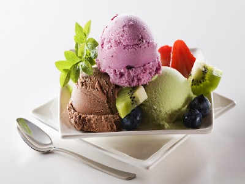

|  |
Food's name: Fruit ice cream▸ Ingredients:
▸ Time to prepare: 2.5-3 hours ▸ Approx quantity: 1 medium bowl |
▸ Detailed recipe:
Step 1:
- Wash the fruit and pat dry each fruit with a paper towel.
- Fruits such as strawberries, raspberries, mulberries, etc., remove the stem. Mango, melon ... peeled, cut into bite-sized pieces. Peel bananas and leave them whole to avoid bruising.
For watery fruits like passion fruit, take the pulp and put it in a separate jar.
- Next, you arrange the fruit in a box, put it in the freezer until it all turns to ice.
Step 2:
- After checking that the fruit is completely frozen, take it out and put it in a blender, add yogurt and puree (you can combine fruits as you like). In particular, bananas help balance
acid levels very well.
- The trio of strawberries, mulberries, and bananas give a sweet, light aroma. Mango and passion fruit when blended with banana will be less sour. And cantaloupe and banana for
sweet taste, easy to eat.
- After blending, pour the mixture into a box or ice cream popsicle mold.
Step 3:
- Finally, you freeze for about 1 hour to complete the sweet and fragrant ice cream. You can add a little condensed milk, or sugar if you like it sweeter or fatter.
=>After completing the above steps, you will be able to enjoy a bowl of delicious ice cream.
▸ Calories and related information: